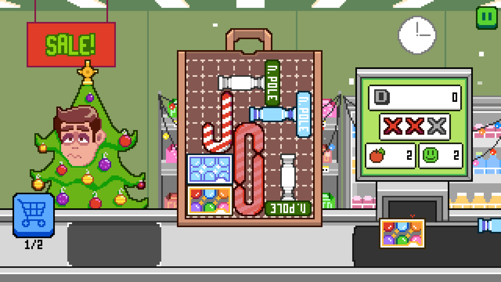
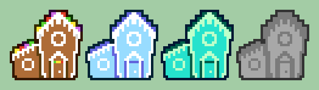
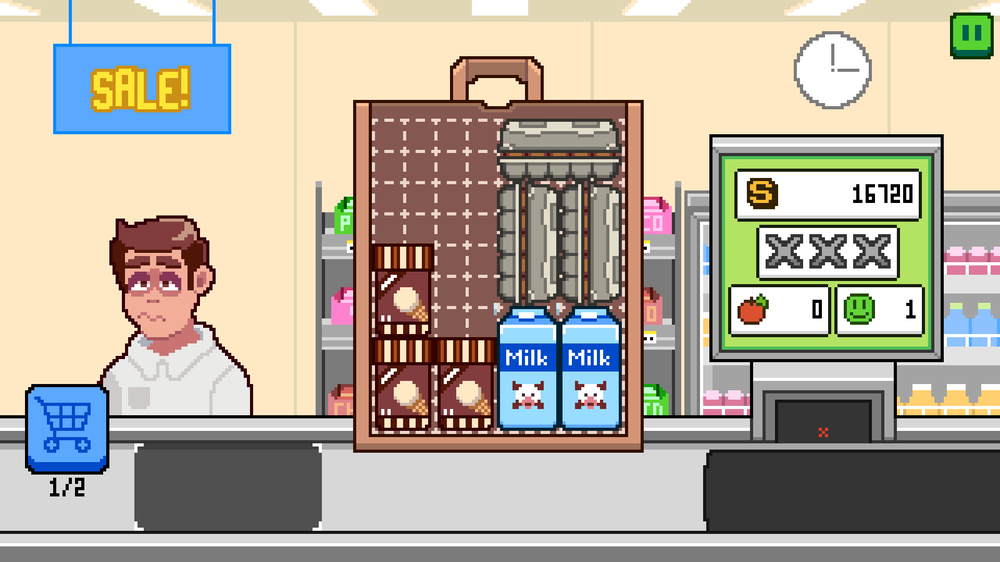
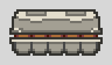
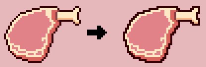

Bag Boy Blitz

A puzzle stacker in the world's most confused grocery store
About
Key Features
Item generation system
Bag Boy Blitz has dozens of items. To eliminate the need to manually input large swaths of data for each one, I wrote a tool script which automatically sets up new item prefabs in the editor. It serves two main functions. The first is to create a complex collision shape by converting a 2d array of binary data representing the item's shape into an array of collision points. The second is to scrape the file system for every asset associated with the item and automatically assign it to the necessary scripts.
Weight Calculation
When a new item is placed in the bag, items underneath it have a chance of being crushed. When one item's weight is distributed across several items, the load is evenly distributed. Since many layers of items may be stacked on top of each other, the game uses an algorithm to recalculate the weight load on every item when the bag is updated.
Noteable Game Design
Pillars of difficulty
Difficulty in Bag Boy Blitz is derived from four areas
- Item weight
- Item durability
- Quantity of items
- Item shape.
I can control the difficulty of the game by adjusting these variables with every new item. Each store theme leans into one area of difficulty and individual levels are designed to combine it with another to create new challenges. For example, items in the winter theme lean into weird shapes for difficulty. One character in the winter theme has several low durability items. The challenge of this level is to find a place to put the strangely shaped items that will keep the weak ones safe from being crushed

Item perks
Each store theme introduces a new game mechanic that leans into one pillar of difficulty
- Winter theme (shape): Items have a chance of spawning frozen. Frozen items can’t be rotated
- Aquatic theme (durability): The store is flooded! Items placed at the bottom of the bag become waterlogged. Waterlogged items decreases in durability
- Convention theme (quantity): the longer you take to clear through a customer, the more tempted they'll be to grab more merchandise. More items means less space in the bag
- Underworld theme (weight): customers may buy a Medusa head item. Medusa heads will petrify any item in their line of site. Petrified items weigh more
These themes are intended to keep the gameplay from being too repetitive by forcing the player to adjust their bagging strategy.

An example of each status effect
Scoring
After every level, the player is scored in these criteria:
- Speed
- Pairs
- Number of bags used
- Number of crushed items
Based on their score, the player is given a letter grade. These grades are an optional challenge
to encourage replayability and add optional difficulty to the skilled player. To 100% the game,
the player must complete a “perfect” run of every level, where each bag is cleared in under 30 seconds,
every item is paired with a like item, the minimum bags are used, and zero items are crushed.
The reason for including this mechanic was this: when I opened the game to playtesters,
every single one of them struggled to complete even the first couple levels.
I realized that my perception of difficulty had been skewed by countless hours of play-testing.
I, for one, was worried the game didn't have enough challenge. The scoring mechanic was created to bridge the gap.
I lowered the difficulty required to complete each level, but added this optional layer of challenge for
players looking to master the stacking mechanics.

A perfectly stacked bag
Art Direction
Bag Boy Blitz is meant to have a light hearted and silly tone. A lot of care was put into the art to portray this tone visually with expressive, easy to read sprites despite the game’s low resolution. Here are some examples of how I achieved this effect.
Keep it simple!
With such a low resolution, I had to make the most of the space I had. Large shapes are colored with 4 colors maximum and detail is rendered minimally. This simpler art style evokes a more cartoonish look which contributes to the unserious tone of the game.

Bold colors
Bag Boy Blitz uses saturated, in-your-face colors. You never see a true black, instead, every outline and shadow uses a dark version of that sprite's primary color.

Solid, blocky outlines
Conventionally, pixel art outlines skip corners to more accurately preserve the silhouette of the sprite. For Bag Boy Blitz, I intentionally used solid outlines to create more blocky sprites, enhancing the cartoonish quality of the art by deviating from the norm.
